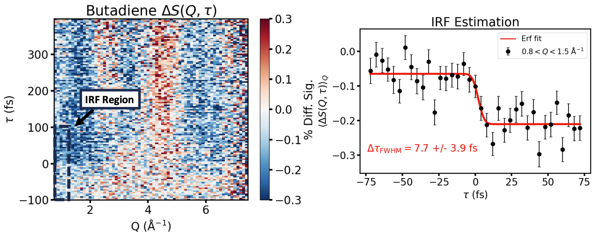

        <section>
          <h3 style="margin: 0 0 0.3em;">A 7.7 fs Instrument Response</h3>
          
          <aside class="notes">
            <ul>
              <li>Shot-to-shot arrival-time correction rebins the difference scattering into 4 fs bins.</li>
              <li>Error-function fit to the rise: $\Delta\tau_\text{FWHM} \approx 7.7 \pm 3.9$ fs — consistent with a &lt;3 fs RDW pump and a 5-6 fs X-ray probe.</li>
              <li>Different experiment (gas-phase scattering) from the main topic of the talk, but a concrete number for what this class of source can achieve.</li>
            </ul>
          </aside>
        </section>
